Cave à bières · Marché Saint-Remy · Namur
CraftBeerMarket.
World Beer Paradise, au cœur du vieux Namur.
Des centaines de bières belges et du monde rangées du sol au plafond, quatre frigos de canettes, et au comptoir quelqu'un qui sait laquelle vous mettre dans le sac.
Belgique et bières du mondeConseil pour offrirAccessible en fauteuil
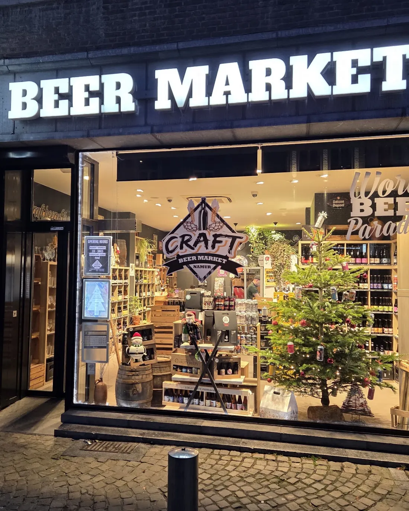
La vitrineMarché Saint-Remy 12/14, au pied de la place d'Armes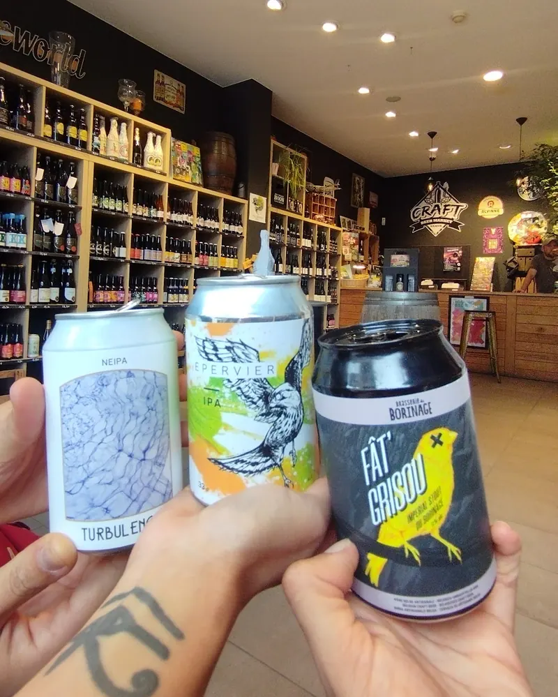
Un passeport bien rempliLes pays croisés en rayon, d'après les étiquettes et les avis.
Le conseil
On entre pour un cadeau, on ressort avec le sourire.
Pas besoin de s'y connaître. Dites pour qui c'est, ce que vous aimez, ce que vous voulez découvrir : au comptoir, on vous compose la sélection, bouteille par bouteille.
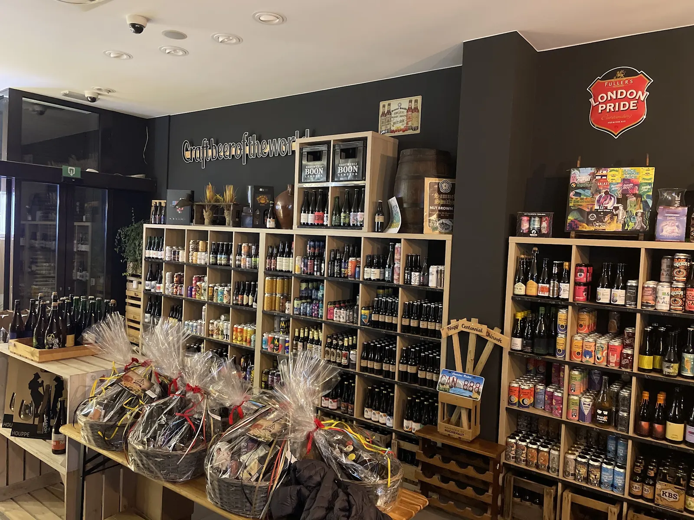
le monsieur m'a très bien conseillé, il était très gentil et souriant, la passion de son métier se faisait ressentir.
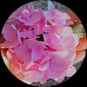
Louise H., avis Google 5 étoilesbières toutes différentes, choisies avec lui au comptoir, avant de rentrer en France.
D'après l'avis Google de Gregory C.De très bons conseils pour quelqu'un comme moi qui recherchait concrètement de la bière locale.
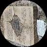
Gregory C., avis Google 5 étoilesDes bières qu'on ne trouve pas facilement ailleurs, un grand choix, des bières de différents pays 'inhabituels' (Pologne, Finlande, Suède, Danemark...)vincent F., avis Google 5 étoiles
Les rayons
Du sol au plafond, des bouteilles. Et quatre frigos de canettes.
Bouteilles rangées par casiers, canettes au frais, verres et affiches de brasseries au fond : on fait le tour comme on feuillette un catalogue.
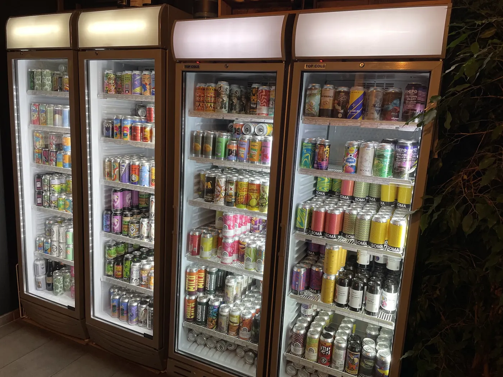
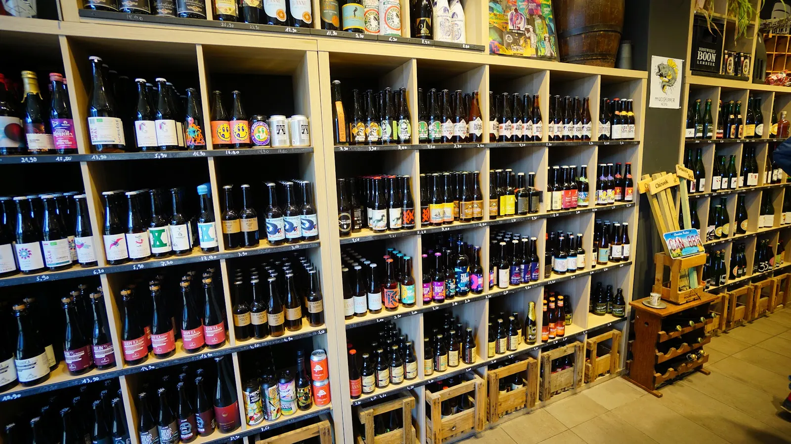
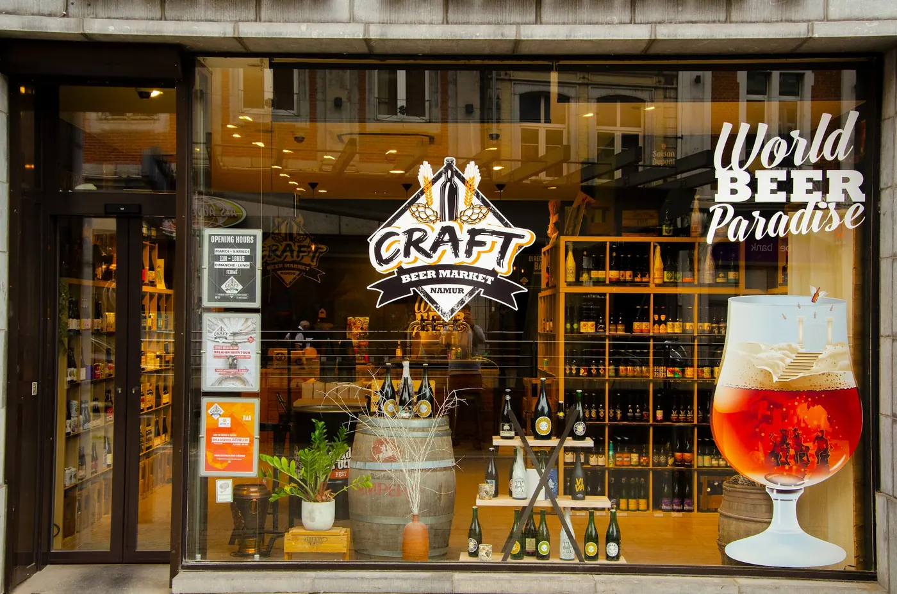
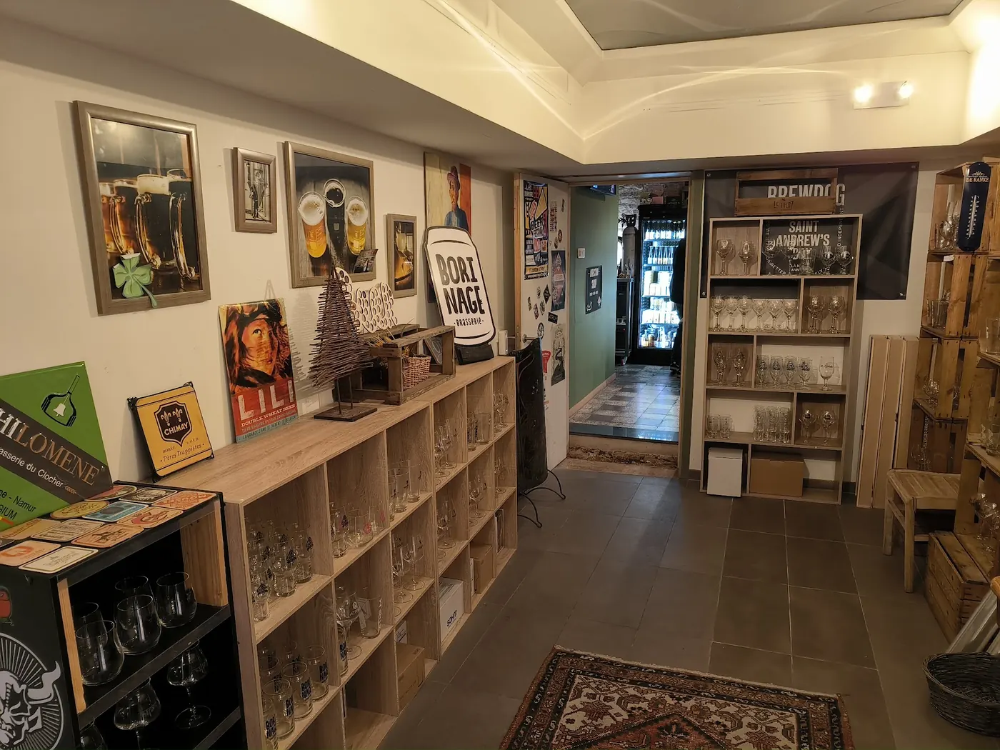
Plus de 600 bières spéciales, belges et étrangères, en boutique.
La DH, mai 2023« Des bières qu'on ne trouve pas facilement ailleurs »
vincent F., sur Google« j'ai été très surprise de voir que les prix sont très abordables »
Louise H., sur Google« quelques produits (mousseux, vins) belges aussi »
vincent F., sur GoogleSur le comptoir
Stouts cirés, IPA en canette, bières d'ici et d'ailleurs.
Quelques bouteilles et canettes photographiées dans la boutique, étiquette lisible. La sélection tourne avec les arrivages.
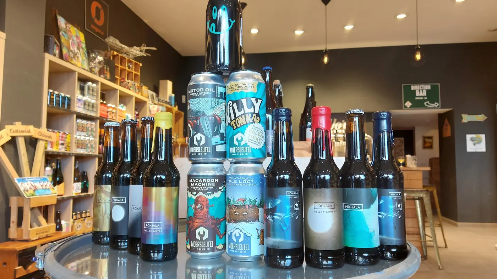
Le coin des stouts
Moersleutel Motor Oil, Macaroon Machine, Willy Tonka et Yule Log en canette, bouteilles cirées Põhjala Cellar Series autour.
Pays-BasEstonie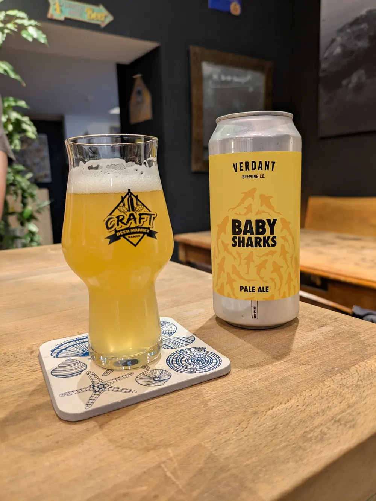
Baby Sharks
Pale ale de Verdant, servie dans le verre maison.
Angleterre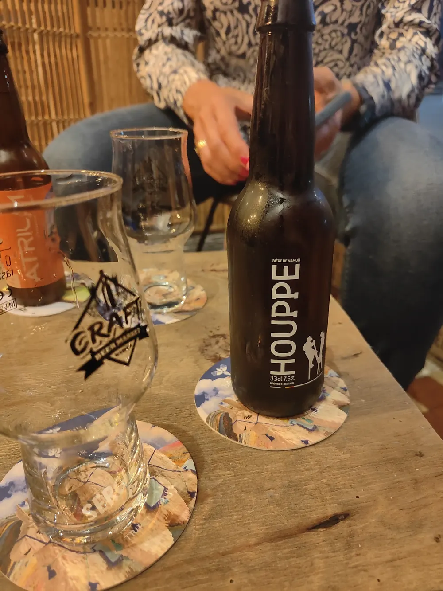
La Houppe
Sur la table, à côté du verre au logo Craft.
BelgiqueLe 19 novembre, on a coché ici…
Bières enregistrées au Craft Beer Market sur Untappd, l'appli des amateurs de bière : check-ins du jeudi 19 novembre 2026 et « boissons populaires » du lieu.
Ce qui est en photo n'est peut-être plus en rayon : demandez au comptoir ce qui vient d'arriver.
À retirer en boutique
Votre carton, prêt au comptoir.
Dites ce que vous cherchez et quand vous passez : la sélection est faite avant votre arrivée. Pour offrir, pour découvrir, pour remplir la cave.
« Merci à notre hôte du jour qui m'a permis de repartir avec un carton de 16 bières toutes différentes. »Gregory C., avis Google 5 étoiles
Retrait du mardi au samediPlutôt par téléphone ? 081 21 58 23
Ils l'ont écrit sur Google
« Un incontournable pour qui est de passage à Namur et aime la bière ! »
Horaires et accès
À deux pas de la place d'Armes, dans le vieux Namur.
Heure de fermeture et jours fériés : un coup de fil avant de venir, au 081 21 58 23.
Marché Saint-Remy 12/14, 5000 Namur
Entrée accessible en fauteuil roulant